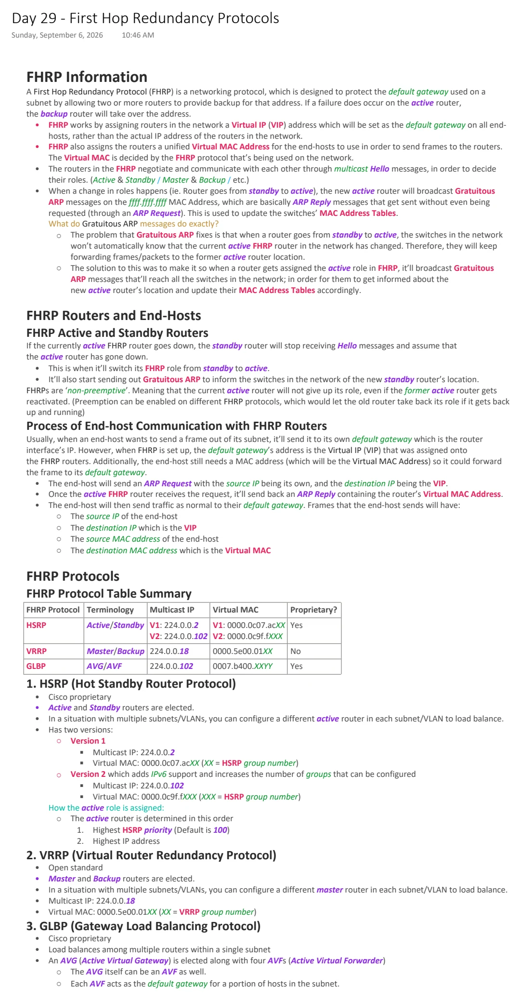
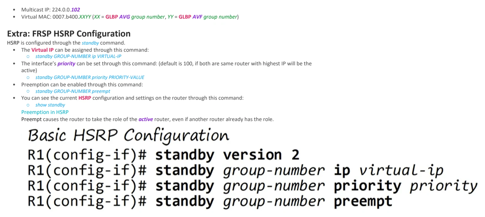

Day 29 / 63 · Routing & addressing
First Hop Redundancy Protocols
Study notes based primarily on Jeremy’s IT Lab CCNA learning videos. Credit to Jeremy’s IT Lab for the source lessons and diagrams.
First Hop Redundancy Protocols
Download original PDF

Text view — First Hop Redundancy Protocols
Extracted from the original export. Diagrams and some formatting appear in the notes above.
Day 29 - First Hop Redundancy Protocols Sunday, September 6, 2026 10:46 AM FHRP Information A First Hop Redundancy Protocol (FHRP) is a networking protocol, which is designed to protect the default gateway used on a subnet by allowing two or more routers to provide backup for that address. If a failure does occur on the active router, the backup router will take over the address. • FHRP works by assigning routers in the network a Virtual IP (VIP) address which will be set as the default gateway on all end- hosts, rather than the actual IP address of the routers in the network. • FHRP also assigns the routers a unified Virtual MAC Address for the end-hosts to use in order to send frames to the routers. The Virtual MAC is decided by the FHRP protocol that’s being used on the network. • The routers in the FHRP negotiate and communicate with each other through multicast Hello messages, in order to decide their roles. (Active & Standby / Master & Backup / etc.) • When a change in roles happens (ie. Router goes from standby to active), the new active router will broadcast Gratuitous ARP messages on the ffff.ffff.ffff MAC Address, which are basically ARP Reply messages that get sent without even being requested (through an ARP Request). This is used to update the switches’ MAC Address Tables. What do Gratuitous ARP messages do exactly? ○ The problem that Gratuitous ARP fixes is that when a router goes from standby to active, the switches in the network won’t automatically know that the current active FHRP router in the network has changed. Therefore, they will keep forwarding frames/packets to the former active router location. ○ The solution to this was to make it so when a router gets assigned the active role in FHRP, it’ll broadcast Gratuitous ARP messages that’ll reach all the switches in the network; in order for them to get informed about the new active router’s location and update their MAC Address Tables accordingly. FHRP Routers and End-Hosts FHRP Active and Standby Routers If the currently active FHRP router goes down, the standby router will stop receiving Hello messages and assume that the active router has gone down. • This is when it’ll switch its FHRP role from standby to active. • It’ll also start sending out Gratuitous ARP to inform the switches in the network of the new standby router’s location. FHRPs are ‘non-preemptive’. Meaning that the current active router will not give up its role, even if the former active router gets reactivated. (Preemption can be enabled on different FHRP protocols, which would let the old router take back its role if it gets back up and running) Process of End-host Communication with FHRP Routers Usually, when an end-host wants to send a frame out of its subnet, it’ll send it to its own default gateway which is the router interface’s IP. However, when FHRP is set up, the default gateway’s address is the Virtual IP (VIP) that was assigned onto the FHRP routers. Additionally, the end-host still needs a MAC address (which will be the Virtual MAC Address) so it could forward the frame to its default gateway. • The end-host will send an ARP Request with the source IP being its own, and the destination IP being the VIP. • Once the active FHRP router receives the request, it’ll send back an ARP Reply containing the router’s Virtual MAC Address. • The end-host will then send traffic as normal to their default gateway. Frames that the end-host sends will have: ○ The source IP of the end-host ○ The destination IP which is the VIP ○ The source MAC address of the end-host ○ The destination MAC address which is the Virtual MAC FHRP Protocols FHRP Protocol Table Summary FHRP Protocol Terminology Multicast IP Virtual MAC Proprietary? HSRP Active/Standby V1: 224.0.0.2 V1: 0000.0c07.acXX Yes V2: 224.0.0.102 V2: 0000.0c9f.fXXX VRRP Master/Backup 224.0.0.18 0000.5e00.01XX No GLBP AVG/AVF 224.0.0.102 0007.b400.XXYY Yes 1. HSRP (Hot Standby Router Protocol) • Cisco proprietary • Active and Standby routers are elected. • In a situation with multiple subnets/VLANs, you can configure a different active router in each subnet/VLAN to load balance. • Has two versions: ○ Version 1 § Multicast IP: 224.0.0.2 § Virtual MAC: 0000.0c07.acXX (XX = HSRP group number) ○ Version 2 which adds IPv6 support and increases the number of groups that can be configured § Multicast IP: 224.0.0.102 § Virtual MAC: 0000.0c9f.fXXX (XXX = HSRP group number) How the active role is assigned: ○ The active router is determined in this order 1. Highest HSRP priority (Default is 100) 2. Highest IP address 2. VRRP (Virtual Router Redundancy Protocol) • Open standard • Master and Backup routers are elected. • In a situation with multiple subnets/VLANs, you can configure a different master router in each subnet/VLAN to load balance. • Multicast IP: 224.0.0.18 • Virtual MAC: 0000.5e00.01XX (XX = VRRP group number) 3. GLBP (Gateway Load Balancing Protocol) • Cisco proprietary • Load balances among multiple routers within a single subnet • An AVG (Active Virtual Gateway) is elected along with four AVFs (Active Virtual Forwarder) ○ The AVG itself can be an AVF as well. ○ Each AVF acts as the default gateway for a portion of hosts in the subnet. • Multicast IP: 224.0.0.102 • Virtual MAC: 0007.b400.XXYY (XX = GLBP AVG group number, YY = GLBP AVF group number) Extra: FRSP HSRP Configuration HSRP is configured through the standby command. • The Virtual IP can be assigned through this command: ○ standby GROUP-NUMBER ip VIRTUAL-IP • The interface’s priority can be set through this command: (default is 100, if both are same router with highest IP will be the active) ○ standby GROUP-NUMBER priority PRIORITY-VALUE • Preemption can be enabled through this command: ○ standby GROUP-NUMBER preempt • You can see the current HSRP configuration and settings on the router through this command: ○ show standby Preemption in HSRP Preempt causes the router to take the role of the active router, even if another router already has the role. Day 29 - First Hop Redundancy Protocols Sunday, September 6, 2026 10:46 AM FHRP Information A First Hop Redundancy Protocol (FHRP) is a networking protocol, which is designed to protect the default gateway used on a subnet by allowing two or more routers to provide backup for that address. If a failure does occur on the active router, the backup router will take over the address. • FHRP works by assigning routers in the network a Virtual IP (VIP) address which will be set as the default gateway on all end- hosts, rather than the actual IP address of the routers in the network. • FHRP also assigns the routers a unified Virtual MAC Address for the end-hosts to use in order to send frames to the routers. The Virtual MAC is decided by the FHRP protocol that’s being used on the network. • The routers in the FHRP negotiate and communicate with each other through multicast Hello messages, in order to decide their roles. (Active & Standby / Master & Backup / etc.) • When a change in roles happens (ie. Router goes from standby to active), the new active router will broadcast Gratuitous ARP messages on the ffff.ffff.ffff MAC Address, which are basically ARP Reply messages that get sent without even being requested (through an ARP Request). This is used to update the switches’ MAC Address Tables. What do Gratuitous ARP messages do exactly? ○ The problem that Gratuitous ARP fixes is that when a router goes from standby to active, the switches in the network won’t automatically know that the current active FHRP router in the network has changed. Therefore, they will keep forwarding frames/packets to the former active router location. ○ The solution to this was to make it so when a router gets assigned the active role in FHRP, it’ll broadcast Gratuitous ARP messages that’ll reach all the switches in the network; in order for them to get informed about the new active router’s location and update their MAC Address Tables accordingly. FHRP Routers and End-Hosts FHRP Active and Standby Routers If the currently active FHRP router goes down, the standby router will stop receiving Hello messages and assume that the active router has gone down. • This is when it’ll switch its FHRP role from standby to active. • It’ll also start sending out Gratuitous ARP to inform the switches in the network of the new standby router’s location. FHRPs are ‘non-preemptive’. Meaning that the current active router will not give up its role, even if the former active router gets reactivated. (Preemption can be enabled on different FHRP protocols, which would let the old router take back its role if it gets back up and running) Process of End-host Communication with FHRP Routers Usually, when an end-host wants to send a frame out of its subnet, it’ll send it to its own default gateway which is the router interface’s IP. However, when FHRP is set up, the default gateway’s address is the Virtual IP (VIP) that was assigned onto the FHRP routers. Additionally, the end-host still needs a MAC address (which will be the Virtual MAC Address) so it could forward the frame to its default gateway. • The end-host will send an ARP Request with the source IP being its own, and the destination IP being the VIP. • Once the active FHRP router receives the request, it’ll send back an ARP Reply containing the router’s Virtual MAC Address. • The end-host will then send traffic as normal to their default gateway. Frames that the end-host sends will have: ○ The source IP of the end-host ○ The destination IP which is the VIP ○ The source MAC address of the end-host ○ The destination MAC address which is the Virtual MAC FHRP Protocols FHRP Protocol Table Summary FHRP Protocol Terminology Multicast IP Virtual MAC Proprietary? HSRP Active/Standby V1: 224.0.0.2 V1: 0000.0c07.acXX Yes V2: 224.0.0.102 V2: 0000.0c9f.fXXX VRRP Master/Backup 224.0.0.18 0000.5e00.01XX No GLBP AVG/AVF 224.0.0.102 0007.b400.XXYY Yes 1. HSRP (Hot Standby Router Protocol) • Cisco proprietary • Active and Standby routers are elected. • In a situation with multiple subnets/VLANs, you can configure a different active router in each subnet/VLAN to load balance. • Has two versions: ○ Version 1 § Multicast IP: 224.0.0.2 § Virtual MAC: 0000.0c07.acXX (XX = HSRP group number) ○ Version 2 which adds IPv6 support and increases the number of groups that can be configured § Multicast IP: 224.0.0.102 § Virtual MAC: 0000.0c9f.fXXX (XXX = HSRP group number) How the active role is assigned: ○ The active router is determined in this order 1. Highest HSRP priority (Default is 100) 2. Highest IP address 2. VRRP (Virtual Router Redundancy Protocol) • Open standard • Master and Backup routers are elected. • In a situation with multiple subnets/VLANs, you can configure a different master router in each subnet/VLAN to load balance. • Multicast IP: 224.0.0.18 • Virtual MAC: 0000.5e00.01XX (XX = VRRP group number) 3. GLBP (Gateway Load Balancing Protocol) • Cisco proprietary • Load balances among multiple routers within a single subnet • An AVG (Active Virtual Gateway) is elected along with four AVFs (Active Virtual Forwarder) ○ The AVG itself can be an AVF as well. ○ Each AVF acts as the default gateway for a portion of hosts in the subnet. • Multicast IP: 224.0.0.102 • Virtual MAC: 0007.b400.XXYY (XX = GLBP AVG group number, YY = GLBP AVF group number) Extra: FRSP HSRP Configuration HSRP is configured through the standby command. • The Virtual IP can be assigned through this command: ○ standby GROUP-NUMBER ip VIRTUAL-IP • The interface’s priority can be set through this command: (default is 100, if both are same router with highest IP will be the active) ○ standby GROUP-NUMBER priority PRIORITY-VALUE • Preemption can be enabled through this command: ○ standby GROUP-NUMBER preempt • You can see the current HSRP configuration and settings on the router through this command: ○ show standby Preemption in HSRP Preempt causes the router to take the role of the active router, even if another router already has the role.